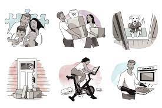
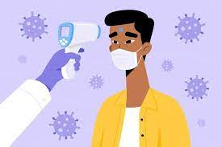
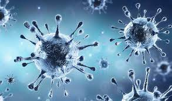

Corona Main Page
Links:
Today I will talk about corona virus in all world
Here’s How the Coronavirus Pandemic Has Changed Our Lives
To say that the novel coronavirus (COVID-19) pandemic has changed the world would be an understatement. In less than a year since the virus emerged — and just over 6 months since tracking began in the United States — it’s upended day-to-day lives across the globe.
The pandemic has changed how we work, learn and interact as social distancing guidelines have led to a more virtual existence, both personally and professionally.
But a new survey, commissioned by Parade magazine and Cleveland Clinic, reveals the pandemic has also changed how Americans approach their health and health care in ways both positive and negative.
Conducted by Ipsos, the survey was given to a nationally representative sample of 1000 American adults 18 years of age & older, living in the U.S.
Here’s what the survey found.
Mental health challenges
Unsurprisingly, the pandemic has triggered a wave of mental health issues. Whether it’s managing addiction, depression, social isolation or just the general stress that’s resulted from COVID-19, we’re all feeling it.
It seems to especially be hitting younger people. Of those surveyed, 55% reported experiencing mental health issues since the onset of the pandemic, including 74% of respondents in the 18-to-34-year-old age range.
Of those respondents, four of the most common issues were:
Stress (33% overall; 42% of 18-to-34-year-olds)
Anxiety (30% overall; 40% of 18-to-34-year-olds)
Depression (24% overall; 31% of 18-to-34-year-olds)
Loneliness or isolation (24% overall; 31% of 18-to-34-year-olds)
Many are also feeling overwhelmed by the constant, sometimes shifting and conflicting flow of information around the virus and the pandemic. Overall, 41% of those surveyed claimed that they were so overwhelmed by COVID-19 news and information that they weren’t paying attention.
Pandemic-induced hesitation
While much of the world has come to a stop at times during the pandemic, the need for health care has not. Yet, 38% of respondents said they skipped or delayed preventive health care visits because of the pandemic even though health care providers have gone to great lengths to ensure that keeping those appointments are safe for everyone.
Women are more likely to skip these appointments than men, 46% to 29%, and as many as 15% of total respondents avoided visits for more serious issues like injury or even chest pain.
“In a time when we need to be able to focus on keeping ourselves as healthy as we can, we must not skip preventive visits to our healthcare providers. When we miss early signs of disease, we allow it to grow into a serious or even life-threatening illness,” says infectious disease expert Kristin Englund, MD.
“Our clinics and hospitals are taking every precaution available to assure patients are safe from COVID-19 within our walls. We cannot let fear of one disease keep us from doing what we need to do to stay healthy,” she continues.
This is especially true for children who need to continue their routine immunizations. As pediatrician Skyler Kalady, MD, points out, “We can’t lose sight of other diseases that children will be at high risk for contracting, like measles and pertussis (whooping cough), without those regular vaccinations.”

Staying healthy during the pandemic
But there is good news as far as respondents’ health is concerned. From lifestyle changes to better eating habits, people are using this time to get healthier in many areas.
Since the pandemic started, nearly two-thirds of the survey’s participants (62%) say they’ve made a significant lifestyle change, including:
More time outdoors or experiencing nature.
Improved sleep patterns.
Starting or modifying an exercise program.
Other healthy dietary changes.
Eating and exercise are new areas of focus for many respondents. One-third of the participants (34%) say they’re eating more healthy food and most (a whopping 87%) say they’ll keep the habit up.
Meanwhile over a quarter of respondents (28%) say they’ve increased their exercise frequency during the pandemic, perhaps a sign that more people are embracing the advantages of working out at home while gyms remain a risky venture.

The virus that causes COVID-19 is in a family of viruses called Coronaviridae. Antibiotics do not work against viruses.
Some people who become ill with COVID-19 can also develop a bacterial infection as a complication. In this case, antibiotics may be recommended by a health care provider.
There is currently no licensed medication to cure COVID-19. If you have symptoms, call your health care provider or COVID-19 hotline for assistance.

FACT: Most people who get COVID-19 recover from it
Most people who get COVID-19 have mild or moderate symptoms and can recover thanks to supportive care. If you have a cough, fever and difficulty breathing seek medical care early - call your health facility by telephone first. If you have fever and live in an area with malaria or dengue seek medical care immediately